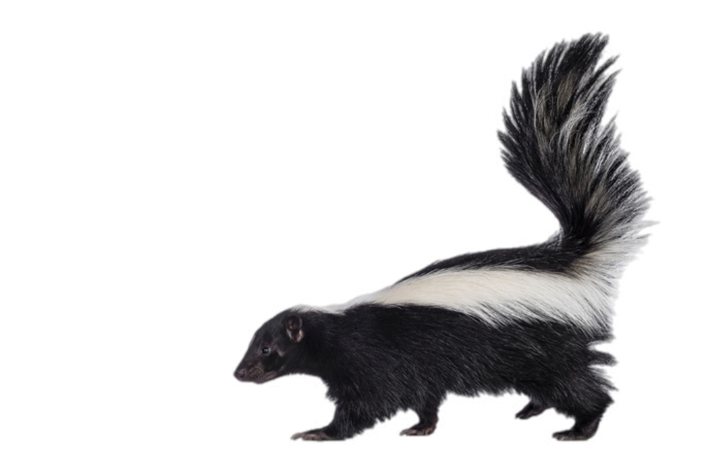

Year:
Month:
This project delves into the Urban Park Ranger Animal Condition Response data,
sourced from NYC Open Data, focusing specifically on the animal relocation activities in Blue Heron Park during the years 2019 and 2020.